| A: Matrix Transpose |
The individual elements of a matrix are usually given lowercase symbols and are distinguished by subscripts. The 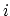th row and 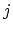th column of matrix 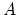 is usually referred to as 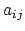. For example, 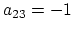. Matrix subscripts are 1-based.
The transpose of a matrix 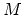, denoted 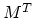, is formed by interchanging the rows and columns of . That is, the 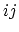th element of is the 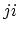th element of . For example, the transpose of matrix above is:
A matrix is said to be sparse if there are relatively few non-zero elements. As a  -by- matrix has 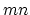 number of elements, storing all elements of a large sparse matrix may be inefficient as there would be many zeroes. There are a number of ways to represent sparse matrices, but essentially they are all the same: store only the non-zero elements of the matrix along with their row and column.
-by- matrix has 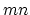 number of elements, storing all elements of a large sparse matrix may be inefficient as there would be many zeroes. There are a number of ways to represent sparse matrices, but essentially they are all the same: store only the non-zero elements of the matrix along with their row and column.
You are to write a program to output the transpose of a sparse matrix of integers.
4 3 3 1 2 3 1 3 2 2 2 3 4 -1 0 3 1 2 3 5 -2 11Note that for a row with all zero elements, the corresponding set would just be one number, `0', in the first line, followed by a blank line.
You may assume:
4 3 3 1 2 3 1 3 2 2 2 3 4 -1 0 3 1 2 3 5 -2 11
3 4 2 1 4 1 5 3 1 2 4 3 4 -2 3 1 2 4 2 -1 11